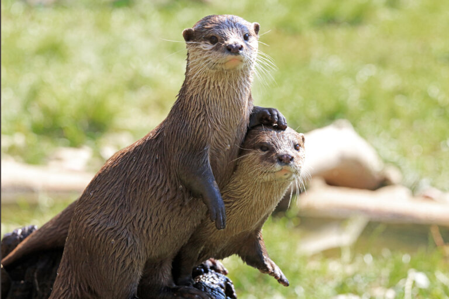

La Nutria
SITIOS RELACIONADOS
Las nutrias son mamíferos acuáticos que pertenecen a la familia
Mustelidae, que también incluye a los tejones, las comadrejas y los
hurones. Existen 13 especies de nutrias que se distribuyen en
distintas partes del mundo, como América del Norte, América del Sur,
Europa, Asia y África.

Las nutrias tienen un cuerpo alargado y aerodinámico, con patas
cortas y una cola larga y gruesa que utilizan para nadar y mantener
el equilibrio en el agua. Sus patas están adaptadas para nadar y
tienen membranas interdigitales que les permiten moverse con
facilidad en el agua. Tienen una capa de pelo gruesa y suave que les
ayuda a mantenerse abrigados y secos en el agua.

Las nutrias son animales muy sociales y suelen vivir en grupos
familiares. Son depredadores oportunistas y se alimentan
principalmente de peces, crustáceos, moluscos y otros animales
acuáticos. Pueden sumergirse hasta 5 minutos en busca de alimento y
pueden comer hasta el 25% de su peso corporal en un solo día.
Las nutrias juegan un papel importante en el ecosistema acuático y
pueden ayudar a mantener el equilibrio de las poblaciones de peces y
otros animales acuáticos. Sin embargo, algunas especies de nutrias
están en peligro de extinción debido a la caza, la contaminación y
la degradación del hábitat.